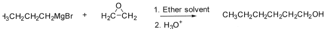
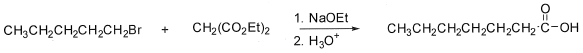
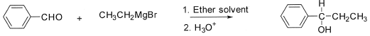
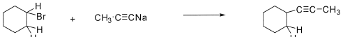
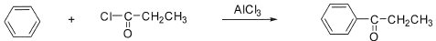

令和2年度 問3 有機化学及び燃料
C－C結合を形成して有機化合物の炭素骨格を伸ばす下記反応において、下記の1～5の選択肢の中で、最も反応が進みにくいものはどれか。
①

②

③

④

⑤

正答
④
4番はアルキンの酸性度由来のアセチリド（R-C≡C–）を用いた求核置換反応です。SN2反応で進行しますがシクロヘキサン環の立体障害により反応が遅くなります。またアセチリドは塩基性が高く、2級や3級のハロゲン化アルキルの場合では脱離反応が優先して起きてしまいます。
1番はグリニャール試薬の求核性を利用したエポキシドの開環反応です。SN2反応により炭素数が2個増えたアルコールが得られます。
2番はマロン酸エステル合成です。
3番はグリニャール反応です。
5番はフリーデル・クラフツ アシル化です。